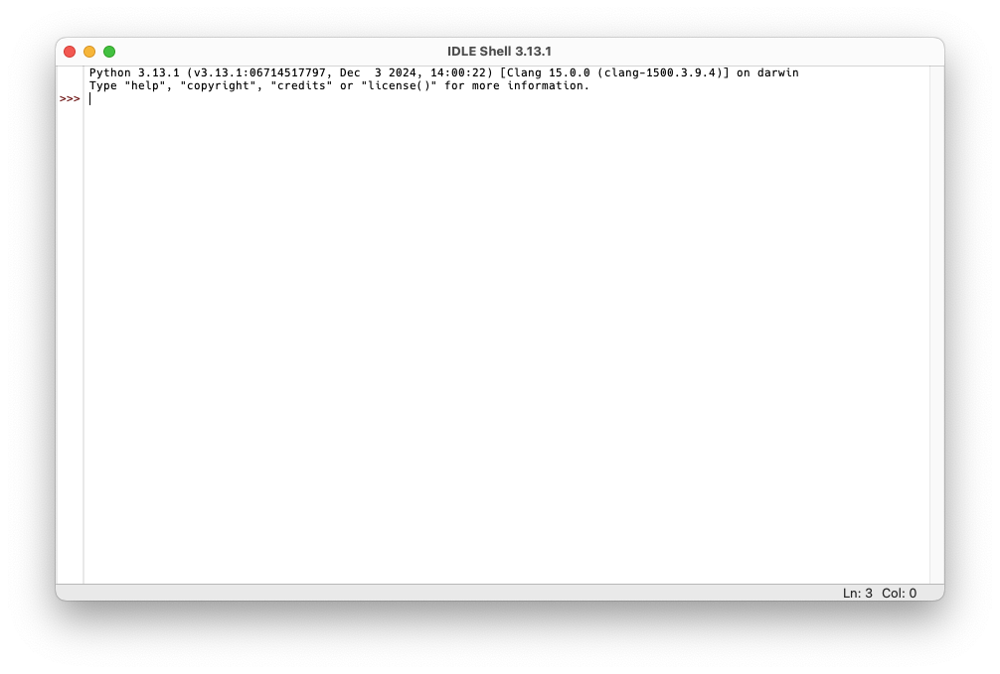
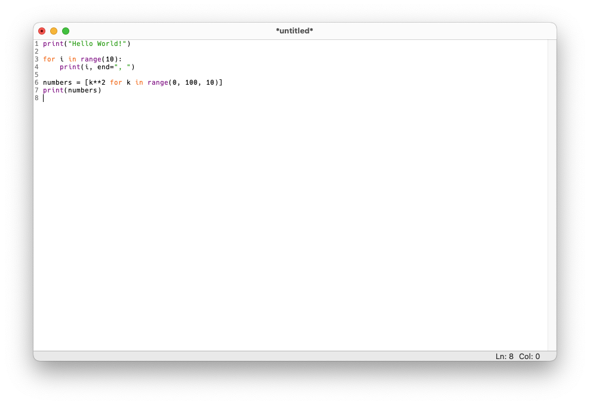

1 + 45Einführung in Python und PsychoPy
Clemens Brunner
9. März 2026
Eine Python-Installation besteht aus der Programmiersprache Python, einem Interpreter (ein Programm, welches Python-Code ausführen kann), und der umfangreichen Standardbibliothek. Python selbst stellt nur grundlegende Programmierkonstrukte zur Verfügung, wie z.B. Schleifen, Bedingungen und einige fest eingebaute Funktionen. Die mitgelieferte Standardbibliothek erweitert die Kernfunktionalität um zusätzliche Datentypen, Ein-/Ausgabe, reguläre Ausdrücke, mathematische Funktionen, Datenkompression, Netzwerkfunktionen, grafische Benutzeroberflächen und vieles mehr.
Im vorigen Kapitel haben wir bereits import math verwendet, um auf mathematische Funktionen und Konstanten zuzugreifen. Diese Vorgehensweise ist notwendig, um Objekte aus einem Modul verwenden zu können. Man muss also das math-Modul aus der Standardbibliothek importieren, um danach auf mathematische Funktionen wie math.sqrt (Quadratwurzel) oder Konstanten wie math.pi (Kreiszahl) zugreifen zu können.
Zusätzlich gibt es noch tausende sogenannte Python-Pakete, die sehr einfach zu einer existierenden Python-Installation hinzugefügt werden können. Diese Python-Pakete sind komplett unabhängig von Python, werden also auch nicht von denselben Personen entwickelt und veröffentlicht. Der Python Package Index (PyPI) sammelt alle verfügbaren Pakete an einer zentralen Stelle. Das offizielle Werkzeug, um Pakete aus dem PyPI zu installieren, nennt sich pip und wird automatisch mit der offiziellen Python-Installation mitgeliefert (mehr dazu weiter unten).
Um komfortabel Python-Code schreiben zu können, sollte man auch einen guten Code-Editor installieren. Wir werden in diesem Kurs das Programm IDLE verwenden, das in der offiziellen Python-Installation enthalten ist. IDLE ist eine sehr einfache Lernumgebung, die ideal für Anfänger geeignet ist, weil sie wirklich nur die allernötigsten Funktionen bietet. Sobald man aber etwas geübter im Umgang mit Python ist, sollte man auf einen mächtigeren Code-Editor wie Visual Studio Code oder PyCharm umsteigen.
Wie bereits im vorigen Kapitel erwähnt, öffnet sich nach dem Start von IDLE ein Fenster namens IDLE Shell, in welchem der interaktive Python-Interpreter läuft:

Der interaktive Interpreter wird benutzt, um einzelne Zeilen Python-Code interaktiv auszuführen. Dies bedeutet, dass Python das Ergebnis einer Berechnung direkt nach dem Ausführen eines Befehls anzeigt. Allerdings speichert der interaktive Interpreter den eingegebenen Code nicht, d.h. wenn man IDLE neu startet, sind alle vorherigen Eingaben nicht mehr verfügbar.
Jedes Python-Programm beginnt also immer “bei Null”. Das ist grundsätzlich sinnvoll, da es dazu beiträgt, reproduzierbaren Code zu schreiben.
Um Code zu speichern, muss man ihn in eine Textdatei mit der Dateiendung .py speichern (solche Dateien werden auch Python-Skripte oder Python-Programme genannt). IDLE bietet einen einfachen Texteditor zum Erstellen und Bearbeiten von Python-Skripten, die dann vom Python-Interpreter ausgeführt werden können:

Um ein neues Skript zu erstellen, wählt man im Menü “File” > “New File”. Es öffnet sich ein neues Texteditor-Fenster, in dem man Python-Code schreiben und in eine Datei mit der Endung .py speichern kann. Um das gesamte Skript auszuführen, wählt man im Menü “Run” > “Run Module” (oder drückt F5). Das Skript wird dann ausgeführt und eventuelle Ergebnisse sind im interaktiven Interpreter verfügbar.
Das Werkzeug pip wird zur Verwaltung von Zusatzpaketen verwendet. Es kann neue Pakete installieren, bereits installierte Pakete aktualisieren oder auch komplett wieder entfernen. Eine Python-Installation sollte damit regelmäßig gewartet werden, d.h. veraltete Pakete sollten nach Möglichkeit aktualisiert werden. Die Standardbibliothek wird dadurch allerdings nicht beeinflusst – diese ändert sich nur, wenn man eine neuere Python-Version installiert.
Dabei ist pip ein sogenanntes Kommandozeilenprogramm, d.h. es verfügt über keine grafische Oberfläche, sondern wird im Terminal (oft auch Eingabeaufforderung genannt) ausgeführt. Um die folgenden Beispiele nachzuvollziehen, muss man also zuerst ein Terminal öffnen (das Programm heißt in den diversen Betriebssystemen praktischerweise auch einfach “Terminal”).
Nach dem Starten des Terminals kann man nun Textbefehle eintippen. Wichtig ist, dass hier kein Python-Interpreter läuft, sondern eine sogenannte Shell – man kann also keine Python-Befehle eintippen, sondern ausschließlich Shell-Befehle! Um zu testen, ob pip funktioniert und welche Version installiert ist, gibt man folgendes ein:
Wenn man hier eine Versionsnummer angezeigt bekommt (z.B. 25.2), funktioniert pip korrekt. Falls hier eine Fehlermeldung ausgegeben wird, wurde vermutlich die Python-Installation nicht korrekt durchgeführt. In diesem Fall installiert man am besten anhand der in der ersten Einheit beschriebenen Schritte Python erneut.
Unter macOS muss man pip3 statt pip schreiben, so wie man auch python3 statt python zum Starten des Interpreters verwenden muss.
Wenn man wissen möchte, welche Pakete installiert sind, verwendet man den folgenden Befehl:
Die Ausgabe beinhaltet alle installierten Pakete, einschließlich ihrer Namen und Versionen. Wenn man Python gerade erst frisch installiert hat, enthält diese Liste nur wenige Einträge.
Bevor man ein neues Paket installieren kann, muss man dessen Namen kennen. Die PyPI-Website kann verwendet werden, um nach einem bestimmten Paket zu suchen. Ein Paket kann dann wie folgt installiert werden (<package_name> muss durch den tatsächlichen Namen ersetzt werden):
Das Entfernen eines Pakets ist ähnlich einfach:
Eine Liste aller Pakete, die aktualisiert werden können, erhält man mit:
Falls dieser Befehl veraltete Pakete anzeigt, kann man jedes einzelne Paket mit folgendem Befehl aktualisieren:
Sobald man mit Python etwas vertrauter ist, sollte man eine sogenannte virtuelle Umgebung für jedes Projekt verwenden, anstatt alle Zusatzpakete global zu installieren. Dies ermöglicht es, die für ein Projekt benötigten Pakete in separaten isolierten Umgebungen zu installieren und so Konflikte zwischen verschiedenen Projekten zu vermeiden. In diesem Kurs werden wir virtuelle Umgebungen aber nicht verwenden.
Der Python-Interpreter führt Python-Code aus. Er kann auf zwei unterschiedliche Arten verwendet werden:
Im interaktiven Modus hat man die Möglichkeit, einzelne Python-Befehle einzugeben. Diese werden sofort ausgeführt und eventuelle Ergebnisse werden am Bildschirm ausgegeben. Ein sogenannter Prompt (>>>) signalisiert, dass Python bereit ist und Befehle eingegeben werden können, zum Beispiel:
Das Ergebnis 5 wird unmittelbar nach dem Befehl ausgegeben.
Wir werden den interaktiven Interpreter hauptsächlich innerhalb von IDLE verwenden (“IDLE Shell”), aber es ist auch möglich, den interaktiven Interpreter direkt im Terminal mit dem Befehl python (bzw. python3 auf macOS) zu starten.
Im Gegensatz zum interaktiven Modus kann Python im Skript-Modus viele Zeilen Code, also insbesondere ein komplettes Skript, auf einmal ausführen. Wie wir bereits wissen, ist ein Python-Skript eine Textdatei (mit der Endung .py), die Python-Code enthält. Im Allgemeinen enthält eine Zeile des Skripts genau einen Python-Befehl. Im Vergleich zum interaktiven Modus zeigt Python die Ergebnisse allerdings nicht automatisch an. Angenommen, ein Python-Skript mit dem Namen test.py enthält die folgende Zeile:
Das Ausführen dieses Skripts (z.B. in IDLE mittels F5 oder im Terminal mit python test.py) führt zwar jeden Befehl im Skript aus, aber es wird kein Ergebnis angezeigt. Dies ist durchaus beabsichtigt und sinnvoll, weil ein Skript oft viele Befehle enthält und es nicht immer erwünscht ist, dass jedes Ergebnis ausgegeben wird. Im Gegensatz dazu ist der interaktive Modus genau dafür gedacht, einzelne Befehle auszuprobieren und sofort die Ergebnisse zu sehen. Wenn man ein Ergebnis im Skript-Modus sehen möchte, muss man dieses explizit mit der print-Funktion ausgeben lassen. Der Code in test.py müsste also stattdessen so aussehen:
Unter Syntax versteht man die Regeln einer Sprache, die festlegen, wie man aus grundlegenden Zeichen gültige Sprachkonstrukte erzeugt.
Ein spezielles Merkmal der Syntax von Python ist, dass Einrückungen Bedeutung haben – sie gruppieren zusammengehörigen Code. Die meisten anderen Programmiersprachen verwenden dafür spezielle Zeichen oder Schlüsselwörter wie z.B. begin, end, { oder }. Durch Einrückungen benötigt Python diese Zeichen nicht, und der Code wird dadurch automatisch strukturierter und kürzer. Dies ist im folgenden Beispiel veranschaulicht (bitte achten Sie nur auf die Struktur, der Inhalt/die Bedeutung des Beispiels ist hier nicht relevant; die Zeilennummern sind außerdem nicht Teil der Syntax und werden nur zur besseren Orientierung angezeigt):
Versuchen wir, die wichtigsten syntaktischen Elemente in diesem Beispiel zu identifizieren. Zunächst fällt auf, dass in Zeilen 1 und 6 sogenannte Kommentare verwendet werden. Diese werden durch ein #-Zeichen eingeleitet. Alles, was danach folgt (also bis zum Zeilenende), wird von Python ignoriert. So kann man Kommentare in natürlicher Sprache zur Erklärung des Codes hinzufügen.
Wenden wir uns nun den einzelnen durch Einrückungen definierten Blöcken in diesem Beispiel zu. Standardmäßig wird ein Block mit vier Leerzeichen eingerückt, d.h. der erste Block beginnt in Zeile 2. Zu diesem Block gehören alle folgenden eingerückten Codezeilen, also Zeilen 3–9. Da die Zeilen 11–12 nicht mehr eingerückt sind, gehören diese auch nicht zu diesem Block.
Ein neuer Block wird immer durch eine Code-Zeile eingeleitet, welche mit einem : endet.
Innerhalb dieses Blocks gibt es aber noch weitere untergeordnete Blöcke. Ein neuer Block wird in Zeile 4 definiert, er beinhaltet die Zeilen 5–8. Darin gibt es einen weiteren Block, eingeleitet in Zeile 6 und bestehend aus Code in den Zeilen 7–8. Zeile 9 gehört wieder zum ersten Block (in Zeile 2 definiert).
Des Weiteren sieht man noch die Verwendung von Funktionen – diese werden mit ihrem Namen und den Argumenten in Klammern aufgerufen, z.B. do_something(6) in Zeile 11 oder print(counter) in Zeile 12. Wenn man eine Funktion aufruft, wird diese ausgeführt – sie erledigt also sozusagen die in ihr definierten Aufgaben. Es gibt auch Funktionen ohne Argumente, diese müssen aber trotzdem mit den Klammern aufgerufen werden, z.B. print(). Mehr zu Funktionen werden wir in einer der nächsten Einheiten lernen. Wichtig ist zu diesem Zeitpunkt nur, dass Sie erkennen können, wie ein Funktionsaufruf aussieht. Ein solcher ist nämlich immer über das Klammernpaar (innerhalb derer eventuelle Argumente vorkommen können) erkennbar, welches direkt auf den Namen der Funktion folgt.
Das Klammernpaar () wird benötigt, um eine Funktion aufzurufen. Man nennt es daher auch Aufrufoperator.
Veranschaulichen wir dieses Thema noch mit einem Beispiel. In der ersten Einheit haben wir die Quadratwurzel einer Zahl berechnet. Dazu haben wir die Funktion math.sqrt aufgerufen, und zwar mit der gewünschten Zahl als Argument, welches wir innerhalb der Klammern angegeben haben. Durch Aufrufen der Funktion wird also deren Code ausgeführt (also die Quadratwurzel des Arguments berechnet):
Python ist sehr genau, was die Syntax betrifft. Zum Beispiel ist es wichtig, die korrekte Groß-/Kleinschreibung zu beachten, d.h. print ist nicht dasselbe wie Print. Ein fehlender : an Stellen, an denen dieser notwendig ist, führt zu einem Syntaxfehler. Falsche Einrückungen können entweder zu einem Syntaxfehler oder zu unerwünschtem Verhalten führen (was bedeutet, dass das Python-Programm ohne Fehler ausgeführt wird, aber nicht das tut, was man eigentlich beabsichtigt hat).
Es ist auf jeden Fall sehr lehrreich, fehlerhaften Code im interaktiven Interpreter auszuprobieren, zum Beispiel:
--------------------------------------------------------------------------- NameError Traceback (most recent call last) Cell In[3], line 1 ----> 1 Print("Hello") NameError: name 'Print' is not defined
Es ist wichtig, mit den Fehlermeldungen von Python vertraut zu sein, um sie korrekt und effizient zu interpretieren (schließlich sollte das Ziel sein, sie zu beheben). Machen Sie also Fehler und lernen Sie daraus!
Im Gegensatz zur Syntax, die man strikt einhalten muss, gibt es auch stilistische Konventionen, die den Code lesbarer und verständlicher machen. Diese Konventionen sind zwar nicht zwingend notwendig, aber es ist sehr empfehlenswert, sich trotzdem daran zu halten. Beispielsweise sind die folgenden drei Anweisungen syntaktisch korrekt und führen alle zum selben Ergebnis:
Der erste Befehl ist vermutlich am besten lesbar, weil alle Operatoren von jeweils einem Leerzeichen umgeben sind, und deswegen sollte man darauf achten, den Code entsprechend zu formatieren. Viele solche stilistischen Empfehlungen sind im Python Enhancement Proposal 8 (PEP8) zusammengefasst. Mit Ruff kann man Python-Code automatisch formatieren lassen. Dazu installiert man es zunächst mittels pip:
Danach kann man die folgenden Befehle im Terminal verwenden, um eine Datei namens test.py zu formatieren:
Die beiden obigen Befehle sind Shell-Befehle und müssen, genau wie pip, im Terminal ausgeführt werden (nicht im Python-Interpreter). Damit sie funktionieren, muss sich die Datei test.py im aktuellen Verzeichnis befinden. Man kann den Befehl ls (bzw. dir) verwenden, um den Inhalt des aktuellen Verzeichnisses anzuzeigen. Falls die Datei nicht aufscheint, kann man mit dem Befehl cd <Verzeichnis> in das entsprechende Verzeichnis wechseln (hier ersetzt man <Verzeichnis> durch den tatsächlichen Pfad, also z.B. cd C:\Users\IhrName\Documents unter Windows oder cd /Users/IhrName/Documents unter macOS).
Je nach Installation kann es außerdem sein, dass man ruff nicht direkt verwenden kann. In diesem Fall sollte es mit python -m ruff (bzw. python3 -m ruff unter macOS) anstelle von ruff funktionieren.
Manche Dinge können übrigens nicht automatisch korrigiert werden, z.B. wenn import nicht, wie von PEP8 empfohlen, am Beginn eines Skripts steht. In solchen Fällen muss man den Code manuell anpassen.
Hilfe zu Python-Befehlen kann man auch direkt im Python-Interpreter erhalten. Möchte man z.B. Informationen zur Funktion print bekommen, tippt man einfach folgenden Befehl ein:
Help on built-in function print in module builtins:
print(*args, sep=' ', end='\n', file=None, flush=False)
Prints the values to a stream, or to sys.stdout by default.
sep
string inserted between values, default a space.
end
string appended after the last value, default a newline.
file
a file-like object (stream); defaults to the current sys.stdout.
flush
whether to forcibly flush the stream.
Einen guten Überblick bietet die offizielle Python-Dokumentation. Hier werden viele Themengebiete rund um Python sehr umfangreich beschrieben. Auch das Tutorial ist sehr zu empfehlen.
Durch die große und sehr aktive Community findet man mit einer Internet-Suchmaschine besonders viele Fragen und Antworten rund um Python. Sehr hochwertige Antworten findet man meist auf StackOverflow.
Auch KI-Tools wie ChatGPT können hilfreich sein, um schnell Antworten auf konkrete Fragen zu bekommen oder um sich Code erklären zu lassen.
Einführungskurse bzw. leicht fortgeschrittene Kurse über Python gibt es viele. Hier ist eine kleine Auswahl an frei verfügbaren Kursen, die Sie nach dieser Lehrveranstaltung (oder sogar parallel dazu) absolvieren könnten:
Klassische Bücher oder Websites eignen sich ebenfalls sehr gut zum Selbststudium. Im Folgenden finden Sie eine kleine Auswahl an kostenlos verfügbaren Ressourcen:
Geben Sie eine Liste aller installierten Pakete in Ihrer Python-Installation aus – welchen Befehl verwenden Sie dazu und wie sieht die Liste aus? Wie viele Pakete sind installiert?
Aktualisieren Sie zunächst alle installierten Pakete (falls notwendig). Suchen Sie dann nach dem Paket ipython – ist dieses Paket bereits installiert? Falls nicht, installieren Sie es! Führen Sie diese beiden Schritte auch für das Paket numpy durch. Abschließend deinstallieren Sie die beiden Pakete wieder.
Geben Sie dann die Liste aller installierten Pakete erneut aus – sind ipython und numpy noch vorhanden? Was ist mit den Abhängigkeiten dieser Pakete passiert – wurden diese ebenfalls deinstalliert?
Erstellen Sie ein einfaches Python-Skript namens test.py mit Hilfe von IDLE. Das Skript soll lediglich Hello World! am Bildschirm ausgeben (verwenden Sie dazu die print-Funktion). Halten Sie sich dabei an folgende Struktur:
print-Funktionsaufruf beinhaltenAchten Sie darauf, dass Ihr Skript PEP8-konform ist (verwenden Sie zur Überprüfung Ruff). Führen Sie Ihr Skript auch aus – so können Sie sicherstellen, dass der Code korrekt ist und keine Fehler produziert.
Sehen Sie sich die Hilfe zu den Funktionen print und sum direkt im Python-Interpreter an!